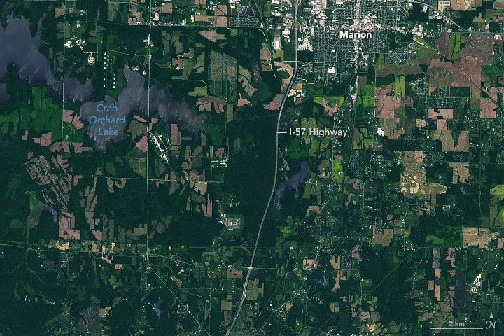

A Tornado Scars Southern Illinois
Severe weather powered across the U.S. Midwest and Mid-Atlantic regions on May 16, 2025, unleashing destructive hail, wind, and tornadoes. The storms uprooted trees, downed power lines, and damaged structures across several states.
In the wake of the storms, satellite images revealed some of the damage, including the track from a tornado that passed through Williamson County in southern Illinois. The track is visible in this image (right), acquired on May 17 with the OLI-2 (Operational Land Imager) on Landsat 9. For comparison, the left image, captured by the OLI on Landsat 8, shows the same area on May 16, before the storm passed through.
Preliminary reports from the National Weather Service indicate that the tornado peaked as an EF-4—the second-highest rating on the Enhanced Fujita (EF) scale, which estimates wind speeds based on observed damage. Wind speeds during this event were estimated to have reached as high as 190 miles (306 kilometers) per hour.
Tornado tracks are typically easiest to see in satellite images where the tornado has passed through vegetated areas. In Williamson County, preliminary damage assessments describe “trees debarked with only stubs of [the] largest branches remaining.”
In total, the track measured just over 16 miles (26 kilometers) long and 575 yards (526 meters) across at its widest point. The track began near the left side of the Landsat image and intensified as it moved eastward toward Interstate 57 and beyond. Several injuries were reported along with damage to homes and other structures.
Severe weather that day also brought strong, deadly tornadoes to Missouri and Kentucky. They include an EF-3 tornado that tracked through northern St. Louis with winds up to 152 miles (245 kilometers) per hour and a path that expanded to nearly a mile wide at times. Kentucky was especially hard hit by the storms, according to news reports, with devastation centered in Laurel County in the southeast part of the state.